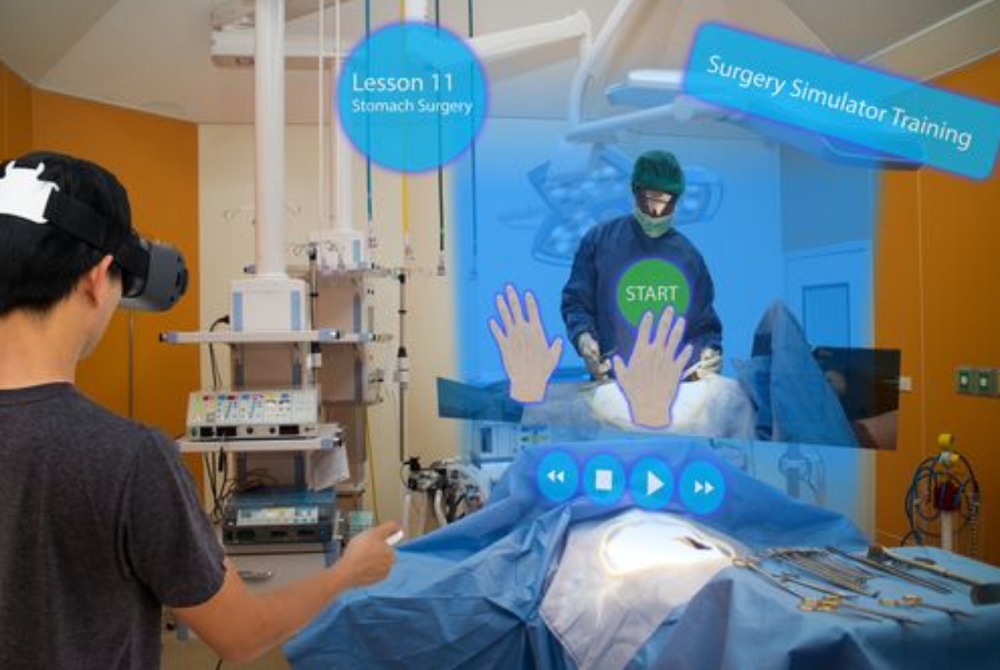
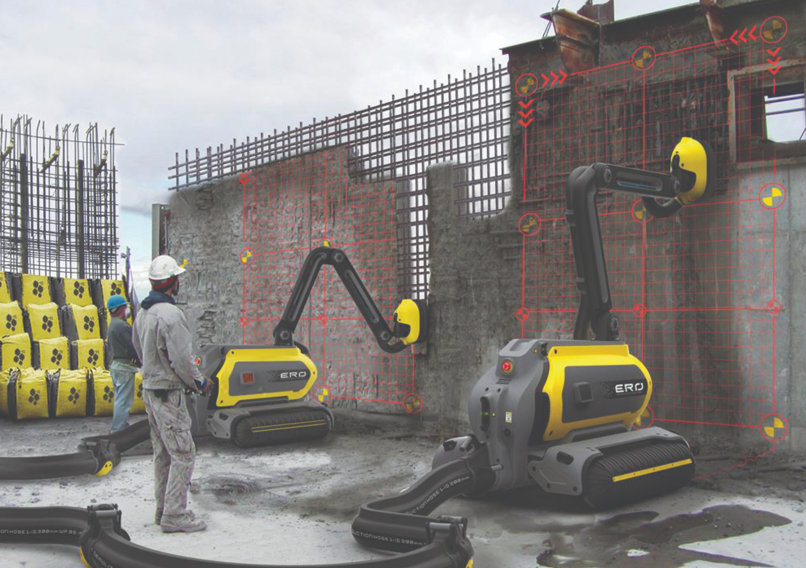
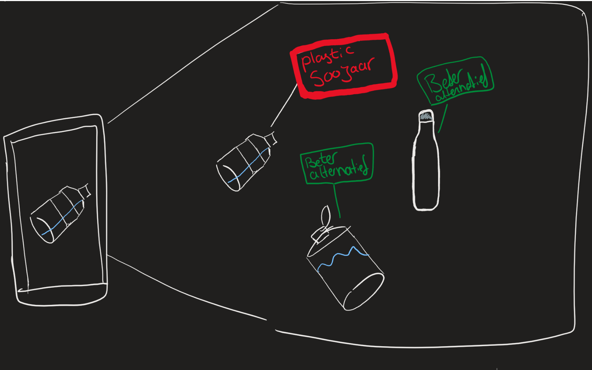
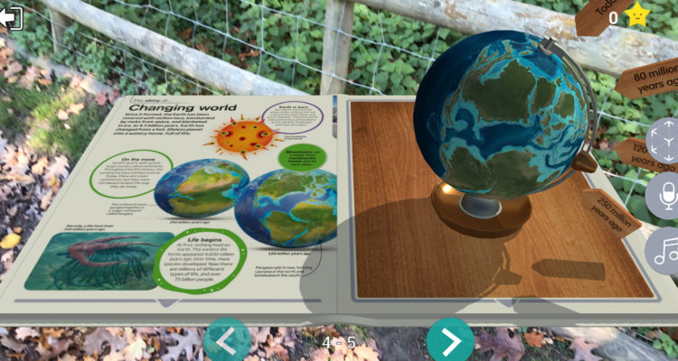

Assignment 1 VR Zorg

Chirurgen opleiden is een lastig process, iets wat jaren duurt en waar één foutje al tot een fataal iets kan leiden. Het oefenen op een cadaver is vaak niet altijd mogelijk en is toch anders dan tijdens een operatie. Een VR operatie omgeving kan hiermee helpen. De gebruiker kan de bril dan opdoen en zit dan in bijvoorbeeld een operatiekamer waar een oefen operatie kan worden uitgevoerd, waarbij het maken van fouten niet erg is. Hier kunnen de chirurgen allerlei operaties of de anatomie van het mens beter leren kennen.
Assignment 1 VR wegwerkers

Het werk aan de wegen en bouw is zwaar werk, veel medewerkers krijgen chronische klachten zoals vermoeidheid en rugklachten. Een robot die helpt met het zware werk kan hierbij helpen. Een medewerker kan de VR bril opzetten en controllers gebruiken om de robot te besturen. De robot is dan een hulpmiddel met het zware werk en de mens is hier het brein en bestuurt de robot met alle taken. Op de lange termijn kan dit veel gezondheidsklachten verminderen omdat de medewerkers dan minder zware taken hoeven uit te voeren.
Assignment 1 AR environment

Met een app op je telefoon kan je producten om je heen scannen om te zien waar het uit bestaat en wat de effecten zijn op het klimaat. Een voorbeeld is een plastic flesje, zodra je het scant zie je hoe lang het duurt tot het afgebroken is. Eventueel zie je suggesties om een meer ecologische alternatief te gebruiken. Zoals een metaal of glazen fles die je hervuld. Deze app is om meer awareness dus bewustwording te creëren met betrekking tot klimaatverandering.
AR Cards

AR BOOKS AR cards worden door een camera herkent en voegen hierbij een virtueel object toe aan jouw scherm. Hier leg je een AR Card neer en herkent de bijbehorende app wat de AR Card is. Een leuk voorbeeld hiervan is een Augmented Reality Book over dieren. Hier download je de app van het boek en kijk je door de camera naar het boek. De app herkent dat je op de “slangen” pagina zit en plaats een 3d model van een slang op het boekje en maakt de slang ook geluid. Op deze manier kunnen kinderen meer over dieren leren dan dat het alleen wordt voorgelezen. Kinderen horen en zien meer over het dier. Zo horen ze hoe een slang sist en hoe die beweegt door de animaties. AR Cards zijn relatief goedkope manieren om iets van AR te doen, een Microsoft Hololens is veel duurder en niet voor een algemene consument. Zo hoef je alleen de app te downloaden en de bijbehorende cards te hebben.